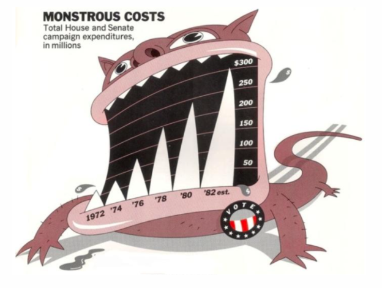
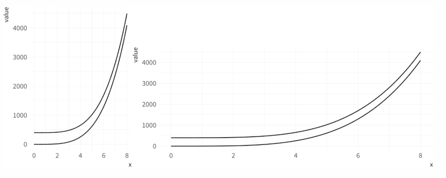
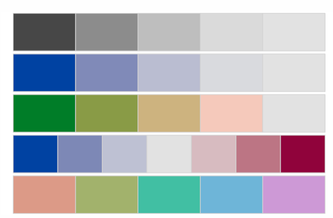

Agenda
- Discuss some of the underlying theory and empirical research behind data visualizaitons
- What makes a figure good? What makes it bad?
- Put it into practice with the lab
- Disclaimer - a lot of this will be based on Healy, Chapter 2
Above all else, show the data
Edward Tufte
Why is it so important?
# devtools::install_github("stephlocke/datasauRus")
library(datasauRus)
datasaurus_dozen %>%
group_by(dataset) %>%
summarize(mean_x = mean(x),
mean_y = mean(y),
sd_x = sd(x),
sd_y = sd(y),
cor = cor(x, y))
## # A tibble: 13 x 6
## dataset mean_x mean_y sd_x sd_y cor
## <chr> <dbl> <dbl> <dbl> <dbl> <dbl>
## 1 away 54.26610 47.83472 16.76982 26.93974 -0.06412835
## 2 bullseye 54.26873 47.83082 16.76924 26.93573 -0.06858639
## 3 circle 54.26732 47.83772 16.76001 26.93004 -0.06834336
## 4 dino 54.26327 47.83225 16.76514 26.93540 -0.06447185
## 5 dots 54.26030 47.83983 16.76774 26.93019 -0.06034144
## 6 h_lines 54.26144 47.83025 16.76590 26.93988 -0.06171484
## 7 high_lines 54.26881 47.83545 16.76670 26.94000 -0.06850422
## 8 slant_down 54.26785 47.83590 16.76676 26.93610 -0.06897974
## 9 slant_up 54.26588 47.83150 16.76885 26.93861 -0.06860921
## 10 star 54.26734 47.83955 16.76896 26.93027 -0.06296110
## 11 v_lines 54.26993 47.83699 16.76996 26.93768 -0.06944557
## 12 wide_lines 54.26692 47.83160 16.77000 26.93790 -0.06657523
## 13 x_shape 54.26015 47.83972 16.76996 26.93000 -0.06558334
What happens when we plot them?
theme_set(theme_light())
ggplot(filter(datasaurus_dozen, dataset == "dino"), aes(x, y)) +
geom_point()

ggplot(filter(datasaurus_dozen, dataset == "away"), aes(x, y)) +
geom_point()

ggplot(datasaurus_dozen, aes(x, y)) +
geom_point() +
facet_wrap(~dataset)

Animate it
# devtools::install_github("dgrtwo/gganimate")
library(gganimate)
p <- ggplot(datasaurus_dozen, aes(x = x, y = y, frame = dataset)) +
geom_point() +
theme(legend.position = "none")
gganimate(p, title_frame = FALSE)
Even better

Matejka & Fitzmaurice (2017). Same stats, different graphs: Generating datasets with varied appearance and identical statistics through simulated annealing.
So it’s important to look at the data, but how?
Is this a good figure?

What’s good? What’s bad? (http://socviz.co/look-at-data.html#look-at-data)
Is this a good figure?

http://socviz.co/look-at-data.html#look-at-data
What about these?

http://socviz.co/look-at-data.html#look-at-data
Ways a figure can be poor
Healy lists three ways a figure can be poor:
- Bad taste
- needless frills (3D, poor/unnecessary colors, chartjunk)
- Bad data
- Basically cooking the data to make it look how you want
- Bad perception
- Encoding between data and visual properties mislead us
Skip to perception
- We’ve already seen some examples of chartjunk and poor data is more self-explanatory (although the example from the book is great). So let’s focus on the more difficult task of appropriately mapping data to visual encodings.

Even without junk, it can be a challenge

Aspect ratios

How do we fix these?
- Eliminate 3D
- Consider faceted or dodged bars
- Aspect ratio is harder
- Try different variations and see how much it changes the perceived relations
- If large differences occur, look at tables of the data and make sure they’re aligning with the visual.
- Most important when using data viz for communication (publication) rather than exploratory purposes (which is most of what you should be doing with data viz)
Thinking about colors
- Generally should be resevered for a third (or fourth, fifth, etc.) variable
- Why is the color needed? What is it supposed to display?
- Palletes
- Sequential
- Diverging
- Qualitative
Some palettes

Sequential

Diverging

Qualitative

What types of plots do we understand best?

Summing up Healy

Visual Cues
(Taken from mdsr, p. 15)
- Position: Numeric. Where in relation to other things?
- Length: Numeric. How big (in one dimension)?
- Angle: Numeric. How wide? Parallel to something else?
- Direction: Numeric. At what slope? In a time series, going up or down?
- Shape: Categorical. Belonging to which group?
- Area: Numeric. How big (in two dimensions)?
- Volumne: Numeric. How big (in three dimensions)?
- Shade: Numeric or Categorical. To what extent? How Severely?
- Color: Numeric or Categorical. To what extent? How Severely? (watch out for red/green color blindness)
Some things to avoid
- 3D plots
- Pie charts
- Dual axes
- Restricted axes
- Unnecessary frills (colors, etc)
- Show the data as plainly as possible. Let the data speak!
Some great examples: SEDA
Sean Reardon: https://cepa.stanford.edu/seda/overview

Means by district

Average gains by district

Mean scores and SES

Mean scores and SES by Race/Ethniciy

Some things to avoid
(Most of these examples are from Nathan Yau of flowingdata)
Truncated axes


Dual axes

Other examples of dual axes
- Let’s look at a shiny app. Try running the following code (install shiny first if you don’t already have it).
library(shiny)
runGitHub("dual-axis", "leeper")
- Spurious correlations? http://www.tylervigen.com/spurious-correlations
Scaling issues

Poor binning choices

Don’t end up in a blog for wrong reasons
- https://flowingdata.com/2010/05/14/wait-something-isnt-right-here/
- https://flowingdata.com/2009/11/26/fox-news-makes-the-best-pie-chart-ever/
Conclusions
- Essentially never
- Use pie charts (use bar charts instead)
- Use dual axes (produce separate plots instead)
- Truncate axes
- Use 3D unnecessarily
- Do
- Show the data
- Be as clear as possible
- Let the data tell the story